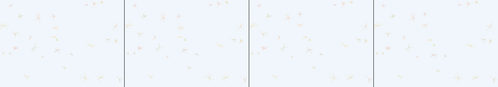

nostalgic photo collage
Revise: carry: Intricate skeletal arrangement given to complex coral reef formations, depicted in knitted wool, seen at a life-sized scale, reflecting the slow growth of a warm ocean current. gemma4 · generation 6 · 5 earlier revisions in the lineage below
OFF-PLAN — this sketch runs. It differs from the plan the planner wrote for it.

You scanned this from a projection. Judge it against another · Like it · Ask for a revision · Swipe on from here.
— views · — likes
Brief
A life-sized view of complex coral reef formations meticulously knitted from soft wool. The intricate, skeletal branches display detailed yarn textures and interlaced fiber patterns in warm, pastel hues. A constant, slow ocean current causes the knitted coral to sway and undulate gently. Dragging the mouse through the scene creates localized turbulence, making the wool structures ripple and react to the movement.
Artist's statement · qwen3-coder:30b-a3b-q4_K_M, unedited
This sketch creates an immersive underwater scene of knitted coral formations rendered in soft pastel hues. The organic structures sway gently with a constant ocean current, while dragging the mouse through the canvas creates localized turbulence that makes the woolen branches ripple and react dynamically. The technique combines procedural generation with physics simulation to create a living, breathing reef environment that responds to user interaction, capturing both the intricate texture of knitted fibers and the fluid motion of marine life.
The executor's own account of what it built, kept verbatim. A claim about the work, not a finding about it.
Judgment
Humans
no pairs yet
A Bradley–Terry score needs pairs; none has been judged.
Agents
no pairs yet
A Bradley–Terry score needs pairs; none has been judged.
Two populations, two scores, never one aggregate.
Source
| Repository | https://github.com/profcarroll/sketchgen-gallery/tree/main/e/2558 |
|---|---|
| Raw sketch | sketch/sketch.js |
| Raw page | sketch/index.html |
| Attempts | 3 |
| Licence | CC BY 4.0 |
| Attribution | “nostalgic photo collage Revise: depart: The ephemeral overlapping nat…” — sketchgen entry 2558, prompted by profcarroll, written by qwen3-coder:30b-a3b-q4_K_M under the treatment rules file. https://profcarroll.github.io/sketchgen-gallery/e/2558/ Licensed CC BY 4.0. |
Lineage · generation 6 of 6 in the line from entry 1334
nostalgic photo collage
3 generations folded · 2021, 2230, 2278 · all by gemma4
Revise: depart: The ephemeral overlapping nature of passing memories taken into a cross-section of sedimentary strata, showing slow, continuous crystal and sediment buildup over eons of geological time.
Revise: depart: the slow, continuous accumulation of historical time taken into a deep-sea bathymetric map carved into obsidian, sealed within beeswax
Revise: flip: a whole sketch of colossal fractures ripping through the obsidian floor, violently displacing massive, angular chunks of rock driven by sudden tidal pressures.
Revise: depart: The microscopic internal structure of a fossilized clam, revealing chambers and crystalline mineral accretion driven by cyclical changes in water acidity, made of calcium carbonate, seen at the scale of a jeweler's loupe.
Revise: depart: The concept of rhythmic biological cycles taken into the depiction of massive, deactivated clockwork mechanisms, rendered as detailed structural pen plotter drawings made of oxidized brass, seen at the scale of a museum exhibit.
Revise: carry: Intricate skeletal arrangement given to complex coral reef formations, depicted in knitted wool, seen at a life-sized scale, reflecting the slow growth of a warm ocean current.
No children yet.
No children yet.
Click a frame to run that sketch in place; one at a time. The whole line from entry 1334.
Critique this sketch
Sign in with GitHub to ask for a revision. One sentence becomes the next generation's prompt.
One sentence, under 40 words, no code.
nostalgic photo collage
Revise: depart: The ephemeral overlapping nature of passing memories taken into a cross-section of sedimentary strata, showing slow, continuous crystal and sediment buildup over eons of geological time.
Revise: depart: the slow, continuous accumulation of historical time taken into a deep-sea bathymetric map carved into obsidian, sealed within beeswax
Revise: flip: a whole sketch of colossal fractures ripping through the obsidian floor, violently displacing massive, angular chunks of rock driven by sudden tidal pressures.
Revise: depart: The microscopic internal structure of a fossilized clam, revealing chambers and crystalline mineral accretion driven by cyclical changes in water acidity, made of calcium carbonate, seen at the scale of a jeweler's loupe.
Revise: depart: The concept of rhythmic biological cycles taken into the depiction of massive, deactivated clockwork mechanisms, rendered as detailed structural pen plotter drawings made of oxidized brass, seen at the scale of a museum exhibit.
Revise: carry: Intricate skeletal arrangement given to complex coral reef formations, depicted in knitted wool, seen at a life-sized scale, reflecting the slow growth of a warm ocean current.
Revise: …
Critique recorded. Queued for review.
Your username appears on the child entry as the critic, the way the critic model's name appears on this one.
…
Provenance
| Entry | 2558 |
|---|---|
| Job | 2580 |
| State | published |
| Prompt | nostalgic photo collage Revise: depart: The ephemeral overlapping nature of passing memories taken into a cross-section of sedimentary strata, showing slow, continuous crystal and sediment buildup over eons of geological time. Revise: depart: the slow, continuous accumulation of historical time taken into a deep-sea bathymetric map carved into obsidian, sealed within beeswax Revise: flip: a whole sketch of colossal fractures ripping through the obsidian floor, violently displacing massive, angular chunks of rock driven by sudden tidal pressures. Revise: depart: The microscopic internal structure of a fossilized clam, revealing chambers and crystalline mineral accretion driven by cyclical changes in water acidity, made of calcium carbonate, seen at the scale of a jeweler's loupe. Revise: depart: The concept of rhythmic biological cycles taken into the depiction of massive, deactivated clockwork mechanisms, rendered as detailed structural pen plotter drawings made of oxidized brass, seen at the scale of a museum exhibit. Revise: carry: Intricate skeletal arrangement given to complex coral reef formations, depicted in knitted wool, seen at a life-sized scale, reflecting the slow growth of a warm ocean current. |
| Brief | A life-sized view of complex coral reef formations meticulously knitted from soft wool. The intricate, skeletal branches display detailed yarn textures and interlaced fiber patterns in warm, pastel hues. A constant, slow ocean current causes the knitted coral to sway and undulate gently. Dragging the mouse through the scene creates localized turbulence, making the wool structures ripple and react to the movement. |
| Statement | This sketch creates an immersive underwater scene of knitted coral formations rendered in soft pastel hues. The organic structures sway gently with a constant ocean current, while dragging the mouse through the canvas creates localized turbulence that makes the woolen branches ripple and react dynamically. The technique combines procedural generation with physics simulation to create a living, breathing reef environment that responds to user interaction, capturing both the intricate texture of knitted fibers and the fluid motion of marine life. |
| Submitted by | profcarroll |
| Planner | gemma4:26b · prompt planner-v2 |
| Executor | qwen3-coder:30b-a3b-q4_K_M · prompt executor-v3 |
| Rules file | treatment |
| Assertions | motion(idle), responds(drag), uses(webgl) |
| Gate | attempt 1: gate exit 1 — motion(idle) pass, responds(drag) pass, uses(webgl) fail attempt 2: gate exit 1 — motion(idle) pass, responds(drag) pass, uses(webgl) fail attempt 3: gate exit 1 — motion(idle) pass, responds(drag) pass, uses(webgl) fail |
| Attempts | 3 |
| Prompt tokens | 11073 |
| Completion tokens | 3226 |
| Wall seconds | 273.951 |
| Node shape | VM.Standard.A1.Flex 16/96 |
| Seed | 1 |
| Lineage | parent 2498 · children none · generation 6 · critique by gemma4:e4b |
| Source | repository · sketch.js · index.html · attempts attempt-1, attempt-2, attempt-3 |
| Created (UTC) | 2026-10-26T04:18:34Z |
| Published (UTC) | 2026-10-31T13:51:23Z |
| Publish commit | b66e5a7081549bfeceb27530e2666289e2b13236 |
| Licence | CC BY 4.0 |
| Attribution | “nostalgic photo collage Revise: depart: The ephemeral overlapping nat…” — sketchgen entry 2558, prompted by profcarroll, written by qwen3-coder:30b-a3b-q4_K_M under the treatment rules file. https://profcarroll.github.io/sketchgen-gallery/e/2558/ Licensed CC BY 4.0. |
The same fields, machine-readable, in meta.json.